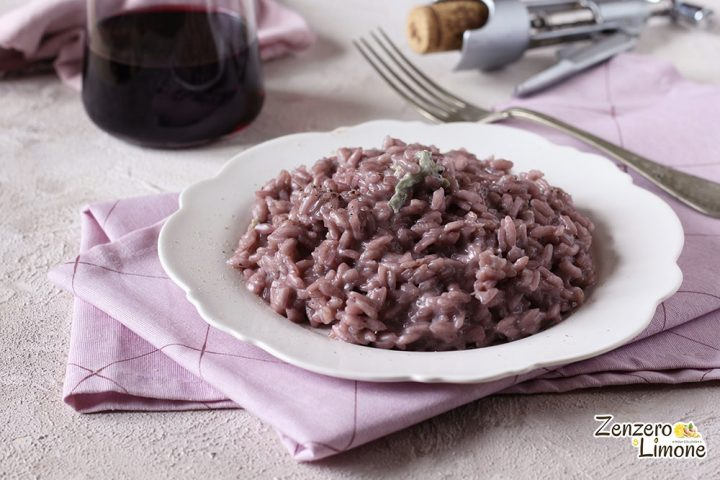

Risotto al Vino

Descrizione
Una ricetta che merita di essere annotata e che potete proporre anche quando avete ospiti.
Strepitoso il gusto; bello il colore. Palato e occhi sono entrambi soddisfatti.
Ingredienti
- Brodo di pollo 500 ml
- Timo 1 rametto
- Burro 100 g
- Cipolla bianca 1 Aglio 1 spicchio
- Riso Carnaroli 225 g
- Vino rosso 500 ml
- Parmigiano Reggiano DOP 25 g
Passaggi
- Portate ad ebollizione il brodo di pollo e mantenetelo ad una temperatura costante. Staccate le foglie dal rametto di timo.
- Fate sciogliere il burro in una casseruola a fondo spesso e soffriggetevi la cipolla tritata e l'aglio tritati lasciandoli ammorbidire. Aggiungete il timo, poi versate il riso e diminuite al minimo il calore. Salate e mescolate per amalgamare bene.
- Aggiungete metà del vino rosso al riso, aumentando il calore. Continuate a mescolare fino a farlo assorbire completamente. Aggiungete metà del brodo e fatelo cuocere a fiamma forte mescolando costantemente. Quando il brodo sarà assorbito, versate il vino restante.
- Versate infine il brodo residuo e fate cuocere il riso al dente. Aggiungete altra acqua se necessario, ogni tipo di riso assorbe quantità differenti di liquido.
- Mescolate metà del parmigiano al risotto ed usate il resto per guarnire i piatti.